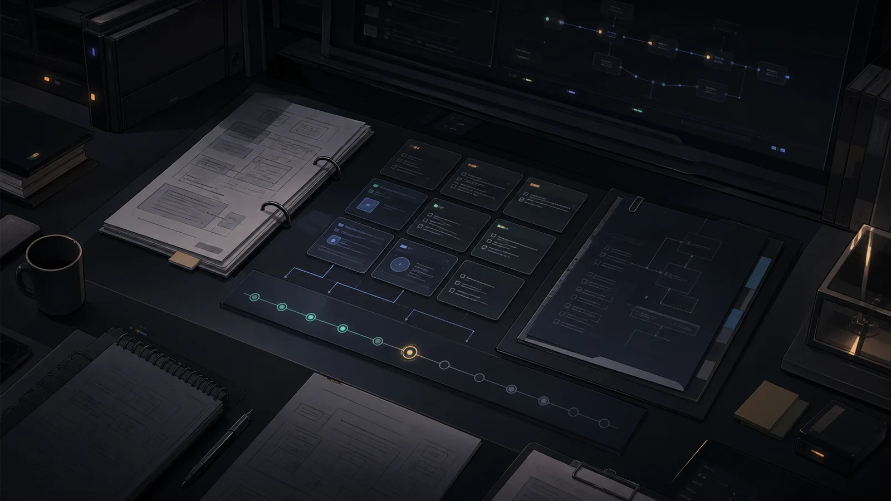

explore
Lee el repo, encuentra restricciones y deja un mapa antes de tocar archivos.
Spec-driven development para agentes de IA
zero convierte una petición abierta en una corrida trazable: explora, planifica, construye y exige un veredicto antes de declarar éxito.
Contrato operativo
La promesa no es que el agente siempre acierte. La promesa es que no avance sin contexto, no implemente sin plan y no cierre sin evidencia.
Lee el repo, encuentra restricciones y deja un mapa antes de tocar archivos.
Define proposal, spec, diseño y tareas pequeñas con presupuesto de revisión.
Implementa con foco, registra decisiones y usa tests donde cambian el riesgo.
Un reviewer fresco decide si pasa, vuelve a build o exige replantear.

Evidencia sobre intuición
Specs canónicas..sdd/specs/ evoluciona con deltas y audit trail.
Run-memory.La próxima corrida recuerda fallos, decisiones y fixes útiles.
Autotune v2.El modelo se ajusta por fase según resultados reales.
Cap duro.Si no verifica dentro del límite, zero frena y lo dice.
Por qué alguien lo instala
zero está pensado para delegar features completas sin convertir la sesión en una caja negra.
Sin veredicto positivo, la corrida no se vende como terminada.
Los errores relevantes se convierten en contexto para la próxima ejecución.
No todo problema pide el mismo modelo. zero ajusta donde importa.
La especificación no muere en el chat: queda en archivos versionables.
/forge --continue vuelve a la fase incompleta sin reiniciar.
Claude Code, pi, OpenCode y Codex pueden usar la misma disciplina.
zero no intenta que la IA parezca mágica. Hace algo más útil: vuelve explícito el trabajo que normalmente queda escondido entre prompts, diffs y suposiciones.
$ pi install npm:@gonrocca/zero-pi $ pi > /forge "agregá login con OAuth" # También disponible para Claude Code, OpenCode y Codex.